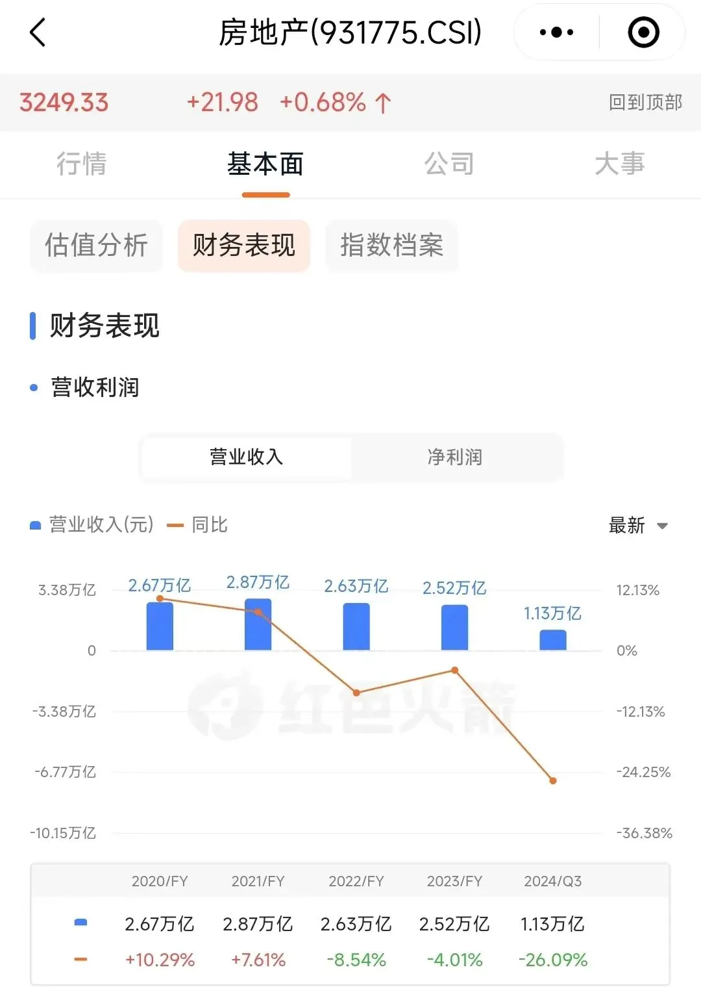
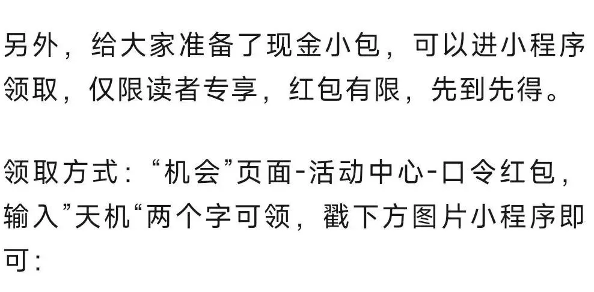

万科的生死节点
原本不打算再专篇写房地产了，奈何问一件事的人特别多，今天就单独写写:
关于万科的一些推演。
NO. 1｜壹
从我个人视角来说，房企并不是正常的企业，更像个地方的包税人。
地方出让一块地，房企拿走，开发盖房，客户通过银行贷款将房和债务接走。
如此，地方拿到了钱，房企获得了业绩，银行拥有了资产（客户的负债就是银行的资产），而客户拥有了房子和负债。
房地产从2021年登顶后开始跌落，已经3年。这些年。曾建议对恒大做切割，防止蔓延；后来“个案”就蔓延到整个行业前，建议放开“限跌”和“限价”，把自主权交给房企和市场…
再后来，建议降低存量房贷利率，让利于民、富民；建议轻徭薄赋、法治、营造良好营商环境......很多东西，说多了就不想说了。
很多人将万科视为中国房地产行业的优秀企业和“三好生”，万科的动向，往往被视为行业的风向标。
整个市场和政策风向，自万科陷入困境后，开始有了巨大的转变。
关注万科的人很多，每天后台都有人咨询和万科相关问题的，我年初也写过关于万科陷入困境的诸多因素文章。
身处整个信息大爆炸的时代，各种小作文满天飞，真真假假，让人无从辨别。楼市等政策频出，不知效果几何。
这种时候，我个人会更看重资本市场的反应，很多东西可以骗人，但资本会用脚投票，相对真实。
通过资本市场的信息和数据，结合自己的分析，来判断房地产行业和各行各业的风向、政策利好或利空，整体准确度挺高的。
可以试试这个“' 红色火箭 ”这小程序：
不仅可以看到各 行业的财务状况（营收及降幅、净利润及降幅等）等基本面，还能看到行情、 行业的重要大事、资讯、政策解读 。如：

在资本市场中，追踪行业的景气指数，看资本市场对行业和信心的情况。
我个人是觉得挺好用的，有炒股，买ETF指数基金的，也可以用它查指数的估值、涨跌、换手率、资金动向。
细分功能还有指数对比，把不同的指数放一块，对比它们的业绩走势、成分股、规模；对某只热门股感兴趣，可以反向找到那些指数包含它；以及，不同指数都有哪些ETF可以买。
9月底-10月中旬，用它看股市的情况做分析判断，我在大A精准逃顶。

本次结合资本市场的数据和万科财报的情况，来说一说关系万科生死的关键节点。
NO. 2｜贰
从财报的角度来看，一个企业陷入困境，通常涉及利润表、资产负债表和现金流量表的逐步恶化。
利润表 ，反映了企业在一定时期内的收入、费用和利润情况， 当企业面临困境时，利润表往往首先受到冲击。
今年9月份万科的三季度财报显示，截至目前，万科的利润表已经崩坏，净亏损179亿元。
万科经过了一系列的操作，还是和绝大多数房企一样，利润表崩坏。这并不是简单的财报洗澡，而是确实的亏损。
当毛利无法覆盖企业的地价支出、管理、销售费用时，企业就会出现亏损；为了销售回款，又不得不降低售价，进一步加剧亏损；为了销售回款，又不得不增加营销费用（如渠道费用），进一步侵蚀利润。
当利润表开始恶化，企业可能出现亏损，且亏损额可能逐渐扩大。
此时，企业可能采取降价、裁员、削减开支等措施，但这些措施往往只能暂时缓解问题，无法从根本上解决盈利能力的下降。
对应到万科身上，每一点都中枪。
2017年的“万宝之争”是一个拐点，之后的万科，肉体尚存，灵魂已换，开始卷入抢地浪潮。
2018年，万科喊出“活下去”的口号，并在当年和此后多年，多次抢下“地王”和行业拿地总金额第一。
在万科内部的29条工作原则中，有一条是：不囤地、不捂盘、不拿地王、不推高房价。 其中的风险管控能力，可见一斑。
就是不知道郁亮和祝九胜接掌万科后，是不是把29条工作原则中关于风控的这部分抛诸脑后了。
NO. 3｜叁
现金流量表，反映了企业在一定时期内现金流入和流出的情况，当利润表和资产负债表都出现问题时，现金流量表也会受到严重影响。
现金流量表造假的成本、难度、风险都比较高，相对不容易造假。
在分析现金流量表时，我们应重点关注两个方面：经营活动现金流量和自由现金流。
经营活动现金流量被誉为企业的“造血功能”，它持续正值是判断企业财务健康的重要指标之一；
而自由现金流，则是衡量企业“钱包厚度”的关键指标，直接关系到企业能否按时偿还债务等，其充足性将成为企业能否度过难关、保持竞争力的关键。
当现金流量表恶化到一定程度时，当企业再也无法通过销售回款和融资等方式，筹集到足够的现金来维持运营时，就会出现现金流断裂的情况。
此时，企业将无法支付工资、租金、税费等必要开销，最终导致企业走向“恒大化”。
最近一年的任何楼市刺激政策，本质上是通过改善房企的现金流量表（增加销售回款和融资），来改善房企的资产负债表和利润表。
来看万科的营收:
2018-23年，万科的营收分别为2977、3699、4191、4528、5038、4657（单位：亿元）。
今年1-9月，万科的营收2199亿元，同比去年同期的2907亿元下滑24.3%；
其中这2199亿元，有467亿元是甩卖大总资产的收入，只有1732亿元是卖房的销售收入；
而去年同期，万科的卖房销售收入有2442亿元，也就是说，今年同比下滑29.1%
营收在大幅度下滑，现金流量表有崩坏的迹象。
NO. 4｜肆
** **
资产负债表 ，反映了企业在一定时期内的财务状况，包括资产、负债和所有者权益，当利润表出现问题时，资产负债表也会逐渐恶化。
万科的总负债，2018年为1.29万亿，21年行业巅峰期时为1.55万亿，2023年底为1.1万亿。
房企拿地是大头的支出。拿地是成本，也是资产。但贷款部分，属于负债，会增加企业的成本，侵蚀利润。
过去十年，房企流行给销售额注水，到处搞项目合作，所以我们看房企拿地支出时，不看全口径数据，只看权益数据，这样才有意义。
据万科财报披露的权益数据，可以算 出万科2018-2023年的权益拿地金额分别约为：
1351、1550、1382、1401、496、463 （单位： 亿元） 。
据万科披露的数据和市场公开资料，可知今年1-11月，万科的权益占比约65%，那么今年1-11月权益拿地金额就是40-45亿元左右。
其中，万科在2018、19、21年地产行业拿地总金额排行第一，20年排行第二。
有时我会想，如果万科22和23年不拿地，可以省下960亿元左右做现金储备，加上今年的40亿，有千亿的现金可用，今年也不至于那么捉襟见肘，那般被动。
总负债分为长期债务和流动性债务，在这，我们只算明面上的债务，不算隐性负债（表外负债）。
其中，一年内到期的 非流动性负债 +总债务 利息 ，就是我们常说的 刚性短期债务。
要看企业的偿债能力，主要看货币资金对应刚性债务的比例，高于100%表示没有偿还压力，低于60%则表示企业有较高的违约风险。
据万科财报数据，可知：
万科 资金覆盖率近三年虽逐步降低，但都保持在112%以上 ；但 今年1-9月万科的货币资金为 7 97 亿元， 刚性短期债务超千亿 。
推算全年呢？ 嗯......这里就不写具体数据了，容易被和谐。
总之，明年万科的 刚性短期 债务会激增，资金覆盖率有很大概率会低于60%这红线。
对于万科来说，最好的是一边谈展期，一边 看 债务化解方案 怎么做合适 ，另外就是继续加大销售回款和甩卖大总资产获取回款，撑到市场回暖。
最后，看看大股东和金融机构能不能有什么融资支持。 只是，大 股东深铁也 尽力了 ， 今年前三季度 净亏损80. 74 亿元。 只能看看银行财团了。
你爸都砸锅卖铁给了你买房的首付，你还要求他多给点？实在掏不出来，只能按揭房买，找银行贷款去。
从财务角度来说，为了维持运营，企业需要借入更多的资金，导致负债总额增加。这些负债可能包括银行贷款、应付账款等。
当下的市场需求下降，导致存货积压，占用大量资金； 固定资产、商誉等市场需求变化等原因，导致资产减值。
随着负债的增加和应收账款的减少，企业可能面临无法支付应付账款的困境，只能搞“工抵房”等活动，这可能导致供应商停止供货，进一步影响企业的正常运营。
总之，资产负债表的恶化使得企业的偿债能力下降，信用风险增加。供应商可能减少供货或要求更严格的付款条件，进一步加剧企业的资金压力。
NO. 5｜伍
这也是为什么我之前会说：
“万科今年的销售额必须保持在3200亿元以上（权益约2000亿元），融资（或债务展期）不低于400亿元”的原因，不然明年上半年的资金覆盖率会太低。
理清这些数据后，和当初推算碧桂园一样，通过对万科收支的推算，最后得出的结果是:
对万科来说，明年的两个时期非常重要，堪称生死节点， 一个是明年的3-5月，一个是明年的8-9月。
迈过去，就能再扛一扛，边等房地产市场“止跌回稳”，边自救；迈不过去，就……
只是， 自古以来要在已经很成熟的趋势和系统中逆行，纯属自找苦吃，定型了就是定型了，晚了就是晚了。
我们能做的，就是耐心地等。看万科最终上演的戏码，是逆天改命，还是回天乏术。
按日期浏览全部来源（同日按条目标识排序）